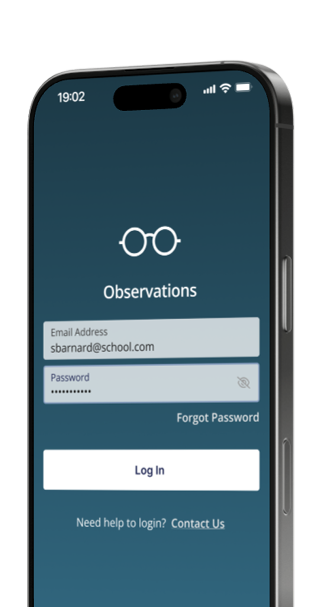
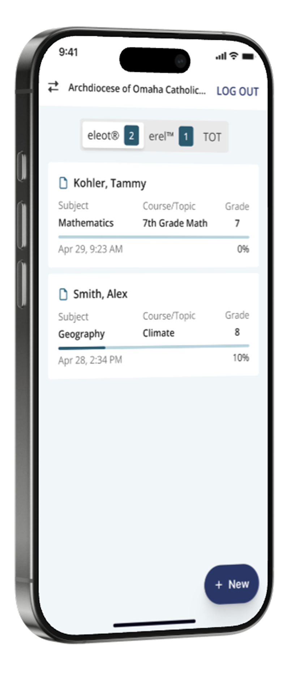
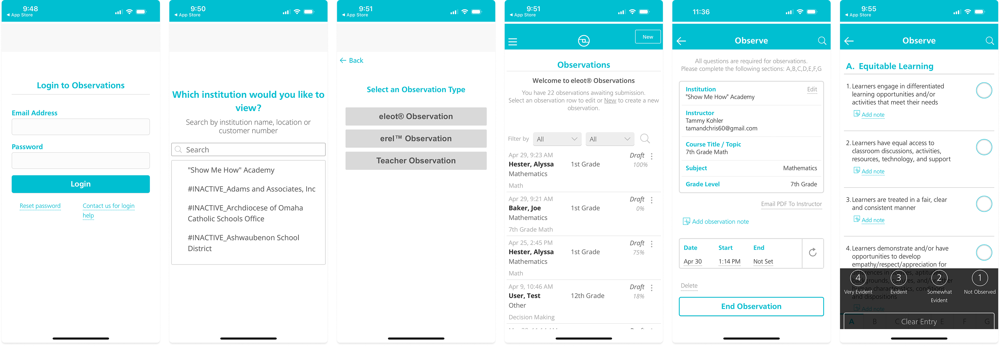
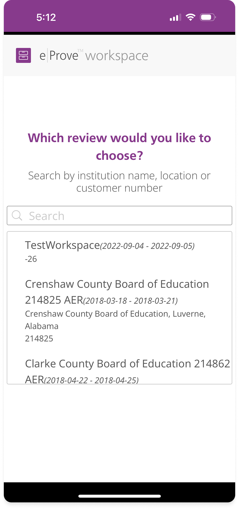
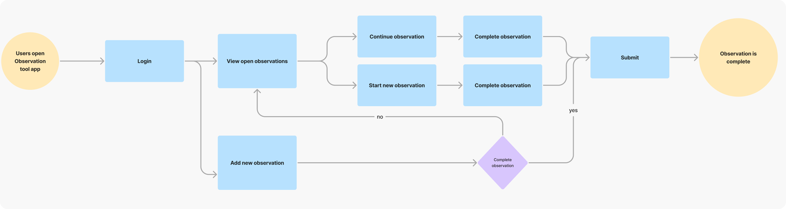
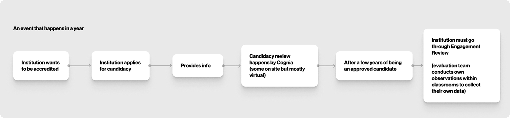

Conducting classroom observations across selected institutions
External evaluators visit classrooms to assess student and teacher performance for institutional accreditation. The observations app provides them with an intuitive interface to document findings in real-time, ensuring accurate assessments without the friction of cumbersome workflows.
My Impact
External evaluators and school-based observers struggle with an outdated and cluttered interface when documenting classroom observations. During live classroom assessments, they must quickly capture student behaviours against predefined criteria while events unfold in real-time. The current app's visual clutter slows them down, creating frustration and cognitive load. When the interface gets in the way, evaluators risk missing important behaviours or recording incomplete information, compromising the accuracy of their assessments.
Requirements Gathering
We had the opportunity to meet with several subject matter experts to gather their insights and requirements. During our discussions, we aimed to fully understand the challenges they are currently facing with the observations app.
Reviewing Existing Screens
We were provided with screenshots of the existing app, and it became clear that it felt quite outdated. The dense text and lack of visual hierarchy are significant issues that we needed to address to enhance the user experience.

Merging Two Apps
Another app, built separately from the observations app, serves the same purpose but is used by a different audience. Our goal was to integrate this app into the observations app for centralised data capture.

User Flow
Mapping the user journey provided valuable insights into how observations are conducted in the classroom. It was essential to grasp the review flow and its connection to the observation process, especially as we prepare for the integration of the apps.


Prototyping Designs (in progress)
To effectively communicate with our client, we created a prototype in Figma. This allows stakeholders to quickly understand the proposed concepts and provide timely feedback. The new design features a more accessible colour scheme from the Cognia brand, promoting a modern and clean aesthetic. Interactions are more intuitive, guiding users seamlessly from the start.